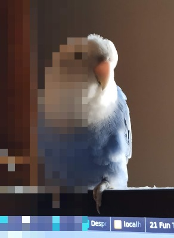
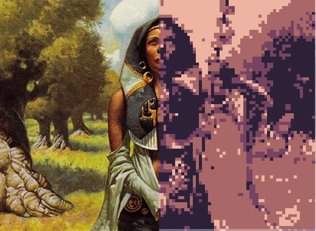
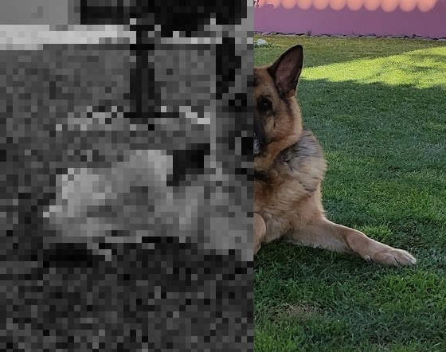
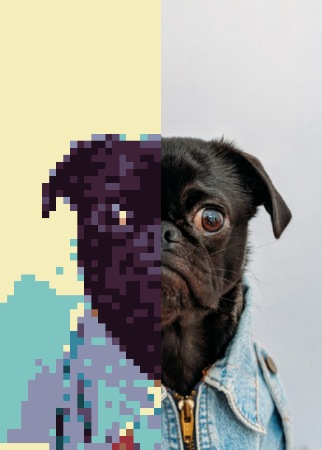
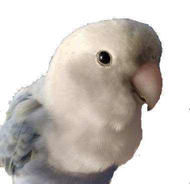

把图片转换成像素画的开源 JavaScript 库。
Pixel It 可以把一张图片转换成像素画：可以设置「像素」大小、用调色板重建颜色，也可以转换成灰度像素画。
可以把它当作像素画创作的起点；全部 API 方法见下方文档。
像素大小 7，其他参数保持默认。

像素大小 17，4 色调色板。

像素大小 10 并启用灰度。

像素大小 8，16 色调色板。

可以直接在这里试用：用默认图片（随意调整参数），或上传自己的图片查看效果。
本地示例图片：assets/sample.png（随本离线副本提供的程序生成测试照片）。
可以上传调色板文件：支持 .hex、pixilart.com 导出的 txt、Paint.net 的 TXT，以及其他类似 csv 的格式。
点击颜色方块即可修改颜色。
点击保存后，刷新页面才能看到新增的调色板。
点击清空会移除全部自定义调色板，且不可恢复；刷新页面后生效。
Pixel It 采用 MIT 许可证。本页是离线副本：库、样式、字体与示例图片都来自本文件夹。
使用默认配置时，需要一个提供图片的元素和一个 id 为 pixelitcanvas 的画布元素；载入 pixelit.js 脚本后即可对图片应用效果。
<img src="assets/sky.jpg" id="pixelitimg" alt=""> <canvas id="pixelitcanvas"></canvas> <script src="dist/pixelit.js"></script> <script> //create object const px = new pixelit(); px.draw().pixelate(); </script
创建实例时可以传入一些配置项（之后也能用 API 方法修改）。
config = {
to : elem, defaults to document.getElementById("pixelitcanvas")
from : elem, defaults to document.getElementById("pixelitimg")
scale : int from 0-50, defaults to 8
palette : [[r,g,b]], defaults to a fixed palette
maxHeight: int, defaults to null
maxWidth: int, defaults to null
}
所有方法都可以链式调用；注意调用顺序会影响最终结果。
先应用调色板再做灰度，与相反顺序会得到略有差异的图片。
.draw() draw to canvas from image source and resizes if max height or max width is reached
.hideFromImg() hides the from image element, is applied on object creation
.setDrawFrom(elem) elem to get the image to pixelate
.setDrawTo(elem) canvas elem to draw the image
.setFromImgSource(src) change the src from the image element
.setpalette(arr) sets the color palette to use, takes an array of rgb colors: [[int,int,int]], int from 0 to 255
.setMaxWidth(int) set canvas image maximum width, it can resize the output image, only used when .resizeImage() is applied
.setMaxHeight(int) set canvas image maximum height, it can resize the output image, max height overrides max width, only used when .resizeImage() is applied
.setScale(int) set pixelate scale [0...50]
.getpalette() returns array of current palette, can't be chained
.convertGrayscale() converts image to greyscale, apply only after .draw is called
.convertpalette() converts image with the defined color palette, apply only after .draw is called
.resizeImage() resizes the output image if bigger than the defined max Height or max Width
.pixelate() draws a pixelated version of the from image to the to canvas, , apply only after .draw is called
.saveImage() saves/downloads current image
